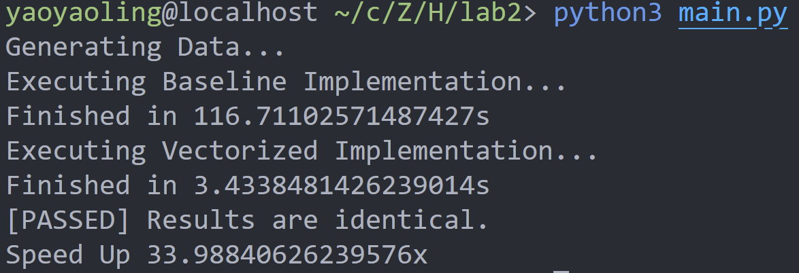

Lab2 向量化计算
Lab Description
本实验的目标是使用numpy，用向量化的语言改写双线性插值！（不要出现for）
- 基准代码
```python def bilinear_interp_baseline(a: np.ndarray, b: np.ndarray) -> np.ndarray: """ This is the baseline implementation of bilinear interpolation without vectorization. - a is a ND array with shape [N, H1, W1, C], dtype = int64 - b is a ND array with shape [N, H2, W2, 2], dtype = float64 - return a ND array with shape [N, H2, W2, C], dtype = int64 """ # Get axis size from ndarray shape N, H1, W1, C = a.shape N1, H2, W2, _ = b.shape assert N == N1
# Do iteration res = np.empty((N, H2, W2, C), dtype=int64) for n in range(N): for i in range(H2): for j in range(W2): x, y = b[n, i, j] x_idx, y_idx = int(np.floor(x)), int(np.floor(y)) _x, _y = x - x_idx, y - y_idx # For simplicity, we assume: # - all x are in [0, H1 - 1) # - all y are in [0, W1 - 1) res[n, i, j] = a[n, x_idx, y_idx] * (1 - _x) * (1 - _y) + \ a[n, x_idx + 1, y_idx] * _x * (1 - _y) + \ a[n, x_idx, y_idx + 1] * (1 - _x) * _y + \ a[n, x_idx + 1, y_idx + 1] * _x * _y return res```
- 完成向量化实现
在源代码中的
bilinear_interp/vectorized.py中，使用numpy完成bilinear_interp_vectorized函数。
- 检查正确性以及加速比
详细的实验指导请点击
提示：
- 一定一定注意本实验中所生成的$(N,H_2,W_2,2)$中的‘2’是指每个像素所想要采样的 a' 图中对应点的坐标，并将采样结果返回。并且这个函数与图片的放大缩小没有任何关系！！！ (更具体来说应该是属性空间和样本空间这样一个概念)
- 此外合理利用
numpy自身的广播或者插轴等方法来计算（不要出现for)
Introduction Knowledge(可以跳过不看)
- Numpy：NumPy是Python语言的一个扩展程序库。支持高阶大规模的多维数组与矩阵运算，此外也针对数组运算提供大量的数学函数库。其底层是c语言来实现。通过接口以及向量化的表述避免了python中循环调用的开销，极大加快了速度。
我记录了一些numpy的使用在课程笔记中，仅作为参考
- 双线性插值：如下图，相信能够很快的理解其中的意思

Lab Design & Test Result
Code Design
我认为本实验的设计的目标在于能够熟悉numpy以及其中广播的一些特性，以及矩阵/向量的计算。我设计的代码如下：
def bilinear_interp_vectorized(a: np.ndarray, b: np.ndarray) -> np.ndarray:
# TODO: Implement vectorized bilinear interpolation
# Get axis size from ndarray shape
N, H1, W1, C = a.shape
N1, H2, W2, _ = b.shape
assert N == N1
# Calculate floor indices
x_int = np.floor(b[:, :, :, 0]).astype(int)
y_int = np.floor(b[:, :, :, 1]).astype(int)
# Calculate fractional parts
x_frac = b[:, :, :, 0] - x_int
y_frac = b[:, :, :, 1] - y_int
# Calculate interpolation weights
w1 = (1 - x_frac) * (1 - y_frac)
w2 = x_frac * (1 - y_frac)
w3 = (1 - x_frac) * y_frac
w4 = x_frac * y_frac
# Perform vectorized bilinear interpolation using numpy.
res = a[np.arange(N)[:, np.newaxis, np.newaxis],
x_int, y_int] * w1[:, :, :, np.newaxis] + \
a[np.arange(N)[:, np.newaxis, np.newaxis],
x_int + 1, y_int] * w2[:, :, :, np.newaxis] + \
a[np.arange(N)[:, np.newaxis, np.newaxis],
x_int, y_int + 1] * w3[:, :, :, np.newaxis] + \
a[np.arange(N)[:, np.newaxis, np.newaxis],
x_int + 1, y_int + 1] * w4[:, :, :, np.newaxis]
return res.astype(int)
其中值得一提的是最后的计算方法（通过网络上的学习）：
a[np.arange(N)[:, np.newaxis, np.newaxis], x_idx, y_idx]是一种使用NumPy的高级索引技巧，用于从数组a中获取特定位置的元素。
具体分析如下：
np.arange(N)创建一个长度为N的一维数组，包含从0到N-1的整数。[:, np.newaxis, np.newaxis]使用切片操作和np.newaxis将一维数组转换为三维数组。这样做是为了与x_idx和y_idx的维度匹配。x_idx和y_idx是之前计算得到的整数索引数组，它们的形状为[N, H2, W2]。a[np.arange(N)[:, np.newaxis, np.newaxis], x_idx, y_idx]使用这些索引数组来获取a中对应位置的元素。这里的高级索引操作会同时在三个维度上进行索引，返回一个形状为[N, H2, W2, C]的数组。
总结起来，a[np.arange(N)[:, np.newaxis, np.newaxis], x_idx, y_idx]的使用高级索引操作从数组a中获取特定位置的元素。通过在三个维度上同时进行索引，可以实现对应位置的插值计算。
Test Result
我们可以看到加速比：近乎34倍，可见向量化计算的好处！

Discussion
通过本次实验，我首先通过教学以及官方文档的阅读学习了NumPy的基本使用。通过网络工具的帮助学习到了一种高阶的索引技巧以及数据计算的方法。
本次主要磕绊自己的实验难点是没有自己读题，主观代入以为是要通过插值来进行图片的放缩操作，但实际则不是这样。后来自己阅读了代码，搞清每句语法以及意义之后很快解决了这个lab！
最后感谢老师和学长，让我通过本次lab的练习对高性能计算以及优化有了一个更清晰的认识！